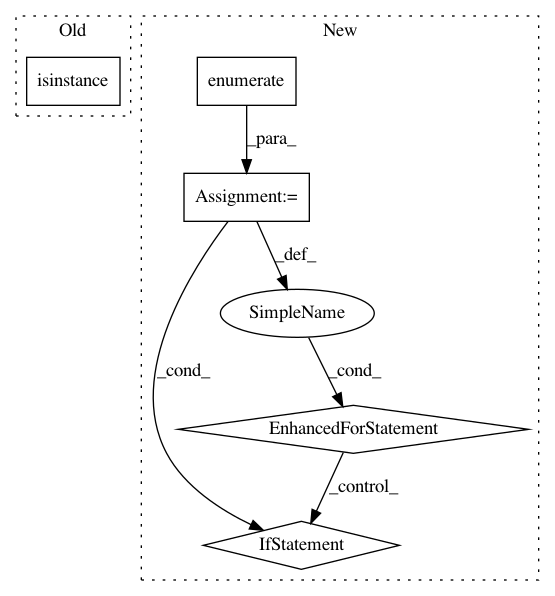

10d7ece1c34c5533262a54d20d974a3d04f0b7ce,src/sdk/pynni/nni/compression/tensorflow/compressor.py,,_instrument_model,#Any#Any#,289
Before Change
name, index = key
cur = getattr(cur, name)[index]
key = wrapper.layer_info.path[-1]
if isinstance(key, str):
setattr(cur, key, wrapper)
else:
name, index = key
After Change
if new_layer is not value:
setattr(model, key, new_layer)
elif isinstance(value, list):
for i, item in enumerate(value):
if isinstance(item, tf.keras.layers.Layer):
value[i] = self._instrument(item)
return model
def _select_config(self, layer):
In pattern: SUPERPATTERN
Frequency: 3
Non-data size: 5
Instances
Project Name: microsoft/nni
Commit Name: 10d7ece1c34c5533262a54d20d974a3d04f0b7ce
Time: 2020-09-15
Author: 40699903+liuzhe-lz@users.noreply.github.com
File Name: src/sdk/pynni/nni/compression/tensorflow/compressor.py
Class Name:
Method Name: _instrument_model
Project Name: dmlc/gluon-cv
Commit Name: c96649bb6e1dfeb9479de6c5e8547d510c6b7a32
Time: 2021-01-19
Author: tmwang428@outlook.com
File Name: gluoncv/auto/tasks/utils.py
Class Name:
Method Name: auto_suggest
Project Name: keras-team/autokeras
Commit Name: 1cda66554188c4504aa94d1bcffd4cef9ee8a997
Time: 2017-12-28
Author: jhfjhfj1@gmail.com
File Name: autokeras/net_transformer.py
Class Name:
Method Name: transform